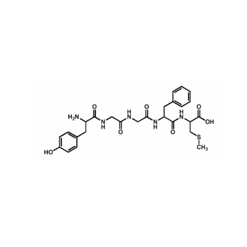
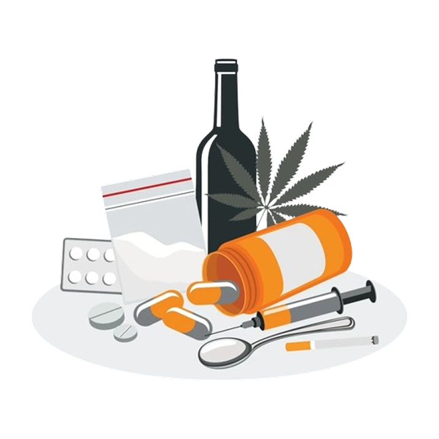
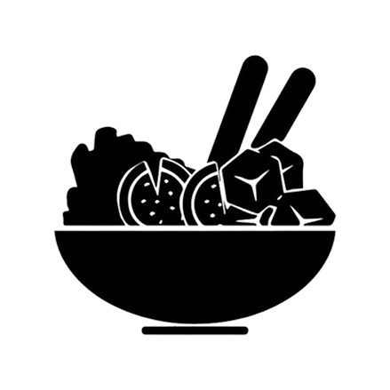

SYNAPSE
Você provavelmente já ouviu e leu diversas vezes que o nosso corpo é como uma máquina, o que não deixa de ser verdade, mas você já chegou a se questionar qual seria o processador central desse grande sistema? Caso não, aqui está a resposta: é o nosso cérebro!
Funcionalidade do Cérebro
- O cérebro recebe informações de todos os lugares: olhos, nariz, ouvidos e os demais órgãos. Ele processa todas essas informações e transforma em pensamentos, ideias ou mensagens para o nosso corpo. O encéfalo diz aos nossos músculos para se moverem, para que diversas atividades possam ser realizadas e controla coisas que fazemos no “automático”, como respirar ou fazer o coração bombear o sangue.
- Precisamos dele para todas as nossas funções básicas: mover, falar, ouvir, ver, cheirar, degustar. E para que isso aconteça o órgão carece de uma grande quantidade de sangue e oxigênio. Cerca de 20% do sangue bombeado a cada momento vai para o cérebro, e se esse fluxo de sangue for interrompido por dez segundos ou mais, a pessoa desmaia.
O cérebro possui diversos mecanismos capazes de evitar graves lesões no órgão. Por exemplo, se a glicose diminui muito, o cérebro envia sinais para as glândulas suprarrenais para liberarem adrenalina, estimulando o fígado soltar os açúcares armazenados. Para protegê-lo também temos a barreira hematoencefálica, feita de células que protegem os vasos sanguíneos do órgão, dessa forma, há um controle de quais substâncias entram ou não no nosso cérebro. A grande maioria das substâncias não têm o poder de passar para o nosso cérebro, já álcool, cafeína, nicotina e outras substâncias dessa espécie conseguem passar.

Alguns medicamentos, como antidepressivos, são criados para ultrapassar essa barreira e poderem fazer efeito. Substâncias necessárias como aminoácidos cheguem até o cérebro através de sistemas de transportes próprios da barreira.
Estrutura do Cérebro
A atividade do cérebro deve-se aos impulsos elétricos gerados pelos neurônios, que processam e armazenam a informação. Esses impulsos percorrem o cérebro através das fibras nervosas. A quantidade, o tipo e a origem da atividade dependem do nível de consciência da pessoa e da atividade específica que está sendo realizada.
O cérebro apresenta três partes principais, cada parte tem várias áreas menores, cada uma com funções específicas.
- Telencéfalo
- Troco Cerebral
- Cerebelo
Neurotransmissores
Um neurotransmissor é um mensageiro químico sintetizado nos neurônios e armazenado em vesículas sinápticas. Quando o impulso nervoso chega ao terminal axônico, essas moléculas são liberadas por exocitose e caem na fenda sináptica, que é o espaço entre a membrana pré-sináptica (membrana que libera os neurotransmissores) e a membrana pós-sináptica (membrana da célula vizinha). Os neurotransmissores interagem com os receptores específicos da membrana pós-sináptica, garantindo que a informação seja transmitida para a célula receptora.
Uma parte dos neurotransmissores pode ser recaptada pelo neurônio responsável pela sua síntese ou ser armazenada novamente nas vesículas desse mesmo neurônio. A liberação dos neurotransmissores, bem como sua captura por receptores específicos, assegura a transmissão do impulso nervoso de forma eficiente. Os neurotransmissores podem ser classificados em dois tipos principais: aqueles que promovem respostas excitatórias e aqueles que geram respostas inibitórias.
-
Excitatórios
Esses neurotransmissores provocam a despolarização da membrana pós-sináptica.
-
Inibitórios
Esses neurotransmissores promovem a hiperpolarização da membrana pós-sináptica.
Todos os Neurotransmissores
Acetilcolina
- A Acetilcolina (ACH) é produzida pelo sistema nervoso (central e periférico).
- Foi o primeiro neurotransmissor a ser descoberto em 1914 pelo fisiologista inglês Henry Hallett Dale (1875-1968).
- Há dois tipos de receptores: muscarínico e nicotínico.
- Suas principais funções são: vasodilatação, redução da frequência cardíaca, aumento de secreções, relaxamento intestinal, contração de músculos, auxílio na cognição.
- A ingestão de alimentos ricos em acetilcolina pode prevenir doenças degenerativas, como o Alzheimer.
Adrenalina
- A adrenalina, ou epinefrina, é produzida e liberada pela medula adrenal quando o sistema nervoso simpático é estimulado.
- Promove, dentre outras ações, aumento do ritmo cardíaco, degradação do glicogênio e degradação da gordura.
- Por atuar em momentos de estresse é considerada um hormônio de “luta ou fuga”.
- Tem aplicação na medicina, sendo usada em casos de parada cardíaca, anafilaxia e asma brônquica.

Dopamina
- A dopamina é conhecida como um dos hormônios da felicidade e quando liberada provoca a sensação de prazer, satisfação e aumenta a motivação.
- Atua nos processos cognitivos, aumentando os níveis de memória e atenção, auxiliando no controle dos movimentos, promovendo a saúde do intestino e contribuindo para o aumento da massa muscular.
- É utilizada em tratamentos de distúrbios neurológicos e psiquiátricos, como doença de Parkinson, esquizofrenia ou TDAH.
- Produzida de forma endógena pelo nosso organismo, em um processo de duas etapas. A tirosina é convertida em outro aminoácido, chamado L-dopa. Então, a L-dopa sofre outra mudança e é transformada em dopamina pelas enzimas do nosso corpo.

Endorfina
- É uma substância natural, produzida pela glândula hipófise, presente no cérebro.
- Ela inibe a irritação e o estresse.
- Tem diversas funções como: maior relaxamento, melhoria da memória, ajuda no bom humor, anti envelhecimento, aumento da resistência física e mental, maior concentração, combate à depressão e ansiedade, regulação do sono, aumento da queima de calorias, maior facilidade de perda de peso, melhor funcionamento do intestino e da pressão sanguínea, redução do colesterol.

Gaba
- O ácido gama-aminobutírico é o principal inibitório do sistema nervoso central. Isso quer dizer que ele é responsável por desacelerar a atividade cerebral.
- Produzido e liberado por neurônios chamados gabaérgicos, e se liga a receptores em outros neurônios.
- O GABA melhora a qualidade do sono, diminui a insônia, tem efeito antidepressivo, diminui a ansiedade, da sensação de tranquilidade e relaxamento e melhora a memória de longo prazo.
Glutamato
- O glutamato é o excitatório mais abundante. Ou seja, ele estimula uma célula nervosa, fazendo que a mensagem química continue a se mover de célula nervosa para célula nervosa sem ser interrompida.
- É essencial para o bom funcionamento do cérebro.
- Produzido pelas células gliais do cérebro.
- Atua na aprendizagem e memória, como fonte de energia para as células cerebrais, mensageiro químico, gerenciador do ciclo sono-vigília e sinalizador de dor.

Noradrenalina
- A noradrenalina é também chamada de norepinefrina e foi identificada em meados dos anos 60.
- Ela é um precursor endógeno da adrenalina.
- É produzida na medula suprarrenal(atua como hormônio) e também no sistema nervoso(atua como neurotransmissor que excita o sistema nervoso autônomo).
- Relacionada com a capacidade de ficar em alerta, de ter uma boa memória, de aumentar a força de contração do coração e de provocar aumento da pressão arterial.

Ocitocina
- A ocitocina é produzida no hipotálamo e liberada na corrente sanguínea pela glândula pituitária.
- É chamada de "hormônio do amor" ou "droga do amor". Uma das razões é sua principal função ser facilitar o parto e liberarmos ela quando excitados ou quando nos apaixonamos.
- Os receptores de ocitocina são expressos por neurônios em diversas partes do cérebro e medula espinhal, e ainda nas amígdalas cerebelares, no núcleo ventromedial, septo, núcleo accumbens e tronco cerebral.

Serotonina
- A serotonina é sintetizada a partir do aminoácido triptofano.
- Ela influencia funções essenciais como humor, sono, apetite, ritmo cardíaco, temperatura corporal, memória, regulação do humor, saúde intestinal, funções cognitivas, saúde cardiovascular e libído.
- Também é conhecida como “hormônio da felicidade”.
- Quase 90% da serotonina no corpo está no trato gastrointestinal, onde regula o processo digestivo e o fluxo sanguíneo.
Vícios
- “Tudo que é em excesso faz mal”, “A diferença entre o remédio e o veneno é a dose”. Desde cedo, crescemos ouvindo isso. Certas vezes, convivemos com pessoas dependentes no nosso dia a dia, mas raramente vemos ou ouvimos falar de um desdobramento científico do porquê isso acontece, por que nosso cérebro cria dependências? Agora que os conceitos vistos anteriormente ganharam práticas, e para entendermos dependências, primeiro vamos separá-las em dois grupos: químicas e não químicas.
- Químicas, sendo aquelas que são dependências de substâncias, como álcool. Não químicas são dependências comportamentais, como jogar. A dependência química é uma síndrome, causada pelo mau uso de uma ou mais substâncias químicas, que podem alterar o estado mental. Se fosse para sintetizar, poderíamos dizer que é causada quando a substância atravessa a barreira hematoencefálica e consegue chegar às redes de neurônios e, portanto, consegue alterar o que acontece nas conexões neurais. Todavia, vamos nos aprofundar um pouco mais…
Drogas afetam a maneira como os neurônios se comunicam e o sistema dopaminérgico de recompensa. Algumas drogas agem nos neurônios, ligando-se a eles e os ativando; outras agem de forma direta ou indireta no sistema de recompensa. Podemos usar de exemplo a cocaína e a anfetamina, ambas agindo na fenda do sistema, fazendo uma produção mais concentrada de dopamina acontecer. Outras substâncias agem da mesma maneira, fazendo com que quantidades exuberantes de neurotransmissores sejam liberadas, ou impedindo que a reciclagem deles seja feita, alterando os transportadores e a comunicação normal entre neurônios.
A felicidade e prazer que sentimos ao usarmos substâncias externas se dão por esses altos picos de liberação de neurotransmissores, com destaque para endorfina e dopamina. Entretanto, quando olhamos individualmente para certas substâncias químicas, podemos destacar especificamente certos neurotransmissores.

Cocaína
- Estimula diretamente o sistema e recompensa. Bloqueia a bomba de recaptação da dopamina, fazendo com que mais do neurotransmissor fique na fenda sináptica, aumentando a concentração e o tempo de ação da substância.
- Resulta em euforia e prazer muito maiores que o normal.
- Afeta também o sistema de neurotransmissão de serotonina, que, além de responsável pela modulação do humor e controle de impulsos, também pode estimular o sistema de recompensa. A droga faz ação nesse sistema por meio do bloqueio da recaptação de serotonina.
Anfetamina/Ecstasy
- Similar à cocaína, essas drogas também atuam no sistema de recompensa e no sistema serotoninérgico (ecstasy) por meio da indução de liberação intensa de dopamina.
- Inibe a recaptação, porém em quantidades menores que a cocaína.
- Os efeitos alucinógenos se dão graças ao estímulo do sistema serotoninérgico.

Nicotina
- Estimula o sistema de maneira indireta.
- Tem capacidade de se ligar com o sistema colinérgico (acetilcolina);
- A ligação aos receptores nicotínicos libera glutamato, que estimula a produção de dopamina no sistema de recompensa.
- Inibe o sistema GABA, sistema responsável por impossibilitar todos os outros sistemas de atuarem. Ao bloquear GABA, a sensação de bem-estar e prazer proporcionada pela nicotina é prolongada.
Opiáceos
- Os receptores tipo um de opióides são os encarregados da sensação de bem-estar durante o consumo da droga.
- Atuam de maneira indireta no sistema de recompensa, por meio de duas ações.
- 1. Ligação dos opiáceos com os receptores opióides dentro do sistema, o que libera dopamina.
- 2. O sistema GABA tenta impedir essa liberação de dopamina, entretanto a droga inibe o sistema GABA.

Álcool
- Atua de maneira indireta sobre o sistema, por meio de glutamato, GABA, opióide e serotonina (todos capazes de afetar o sistema e recompensa).
- Inibe o glutamato e estimula GABA, produzindo uma sensação de relaxamento.
- Por meio da serotonina, é passada uma sensação de bem-estar para o indivíduo, o que o faz querer consumo frequente da bebida.
Outros Vícios
Comportamentos aparentemente inofensivos do dia a dia também podem ser perigosos. Sobre dependências não
químicas, podemos conceituar que são comportamentos compulsórios, que causam principalmente problemas
sociais e psicológicos no indivíduo. Não tão ensafadas quanto dependências químicas, mas com um nível de
gravidade que não fica muito atrás de dependências por uso de substâncias.
Atuam de forma muito parecida com a dependência química, por meio do estímulo indevido do sistema de
recompensa. Você desenvolve um hábito que, a princípio, é inocente e prazeroso, mas, aos poucos, começa
a praticar com mais frequência, desejando cada vez mais a liberação de dopamina que ocorre durante a
prática, e, quando você menos percebe, está dependente daquilo.
Podemos listar vários comportamentos que se tornam compulsões:
-

Compras
-

Jogos de Azar
-

Pornografia
-

Uso de Telas
-

Transtornos Alimentares
-

Sexo
Em todos há algo similar, normalmente, uma sensação de vazio dentro do indivíduo que só é preenchida quando tais hábitos são praticados. Ao comprar na internet, apostar, passar horas rolando o feed do Instagram, comer até passar mal… Tudo isso ativa o sistema de recompensa, liberando a dopamina que traz a sensação de prazer, bem-estar. Assim, só somos motivados pela sensação de continuar os maus hábitos.
O que é comum entre os dois tipos? A dependência ocorre graças à estimulação do sistema de recompensa, que, ao retornar sensações boas, ensina o nosso cérebro de que aquela atividade é boa e deve ser repetida, e, conforme essas repetições acontecem, a dependência é desenvolvida. Assim, o cérebro se ajusta, produzindo menos neurotransmissores ou diminuindo o número de receptores, diminuindo também o prazer que a pessoa sente em atividades que naturalmente liberam os neurotransmissores.
O indivíduo então entra em um ciclo vicioso, sentindo-se desmotivado para fazer coisas que antes lhe davam prazer, e precisando usar quantidades cada vez maiores da droga para se sentir satisfeito.
Como sair dos vícios
O processo para reconhecer uma dependência normalmente é delicado e exige atenção, mas não se faz menos necessário por causa disso. O ponto principal está em olhar para si mesmo e se perguntar o quanto aquele hábito está afetando você e as pessoas ao seu redor. Porém, um diagnóstico oficial é feito somente por um especialista, então após identificar uma possível dependência, procure um profissional que possa te ajudar.
Feito o diagnóstico, é analisada a gravidade da dependência e então o tratamento pode ser iniciado, utilizando de remédios, terapia, grupos de apoio, e claro, mudanças de hábito.
Obviamente não é um processo fácil, exige esforço integral do indivíduo e apoio das pessoas ao seu redor. Dependências comportamentais são um pouco mais complicadas de vencer, afinal você pode escolher não consumir mais álcool e parar de fumar, mas não pode evitar navegar pela internet ou nunca mais fazer compras, exige paciência e autocontrole, mas é possível! Para finalizar, é bom destacar a importância de não baixar a guarda, mesmo depois de a dependência estar estabilizada, para evitar ao máximo qualquer chance de recaídas.
Dentre as dicas para ajudar no processo de vencer dependência podemos destacar:
- Comece uma nova rotina aos poucos! Explore novos hobbies, faça exercícios físicos, passe tempo ao ar livre, ocupe sua mente para ajudar no processo.
- Tenha uma atitude de escape. Uma atividade que alivie o seu estresse, te traga conforto. Para alguns é yoga, para outros é ler…. as possibilidades são muitas, explore e descubra!
- Aprenda a identificar gatilhos, e evite-os. Mantenha-se afastado daquilo que desencadeia vontade de voltar para a dependência.
- Frequente grupos de apoio. Encontre um lugar que ofereça ajuda a pessoas com uma trajetória semelhante à sua.
- Busque ajuda profissional! Com destaque para terapia, que auxilia na mudança de pensamentos e hábitos. Com acompanhamento médico também é possível iniciar um tratamento com remédios prescritos pelo profissional.